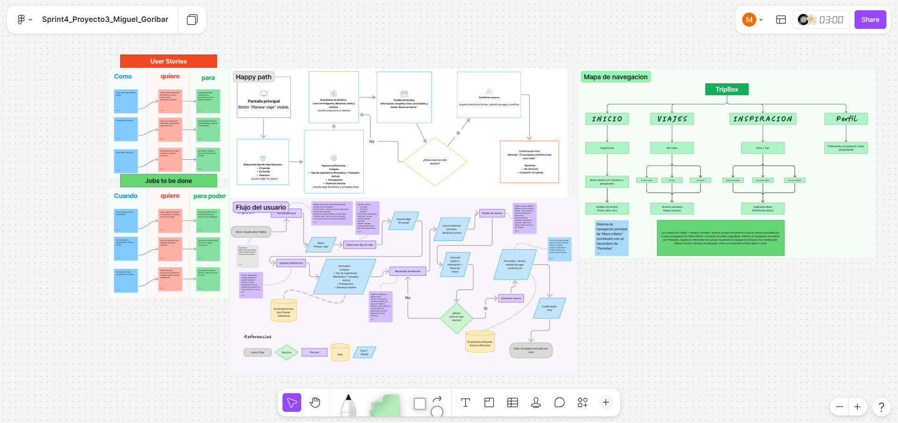
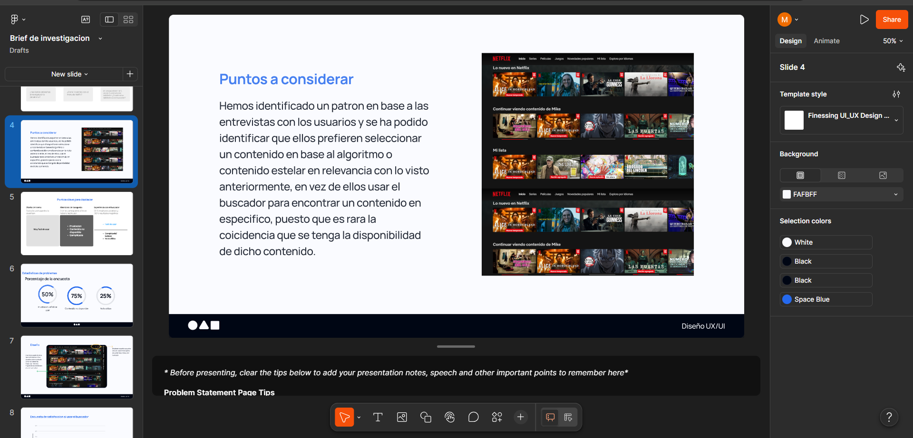
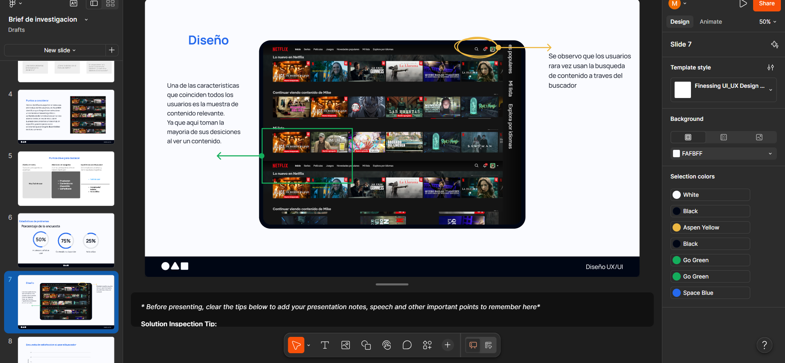

Clearer content discovery
Understanding how users find, evaluate, and choose digital content.
A UX research case study focused on decision-making, navigation behavior, and the moments where users need more clarity before moving forward.

Users struggled to find content with confidence
Research revealed that users often felt frustrated when looking for specific content. Instead of relying only on direct search, they preferred familiar recommendations and visible content rows because they felt more predictable.
Identifying recurring pain points

“Users were not just looking for content — they were looking for confidence that the content was available.”
Core research takeaway
Users preferred guided discovery over manual search
Interviews showed that users often explored recommended content instead of using search directly. Visual relevance, familiarity, and previous viewing behavior strongly influenced their decisions.
Observing how users make content decisions

Mapping the experience
To better understand navigation behavior, I mapped user flows, decision points, and content exploration patterns across the platform experience.
Understanding how interface structure influenced behavior
The interface analysis highlighted how content hierarchy, recommendation placement, and visual grouping influenced navigation behavior and reduced cognitive effort.

What the research revealed
Search was not the first instinct
Users rarely searched directly when confidence in content availability was low.
Recommendations shaped decisions
Visible recommendations strongly influenced what users chose to explore next.
Hierarchy reduced friction
Clear visual grouping helped users scan content faster and make decisions with less effort.
Make discovery feel easier and more predictable
- Improve content hierarchy so users can quickly identify relevant options.
- Make recommendations feel more intentional and easier to scan.
- Reduce reliance on search by improving guided discovery patterns.
- Use clearer visual cues to support faster decision-making.
Research translated into clearer product direction
The research helped identify why users avoided direct search, how they relied on content recommendations, and where interface hierarchy could better support confident decision-making.
Interested in research-driven product design?
I’m open to UX/UI opportunities where research, clarity, and product thinking are part of the design process.